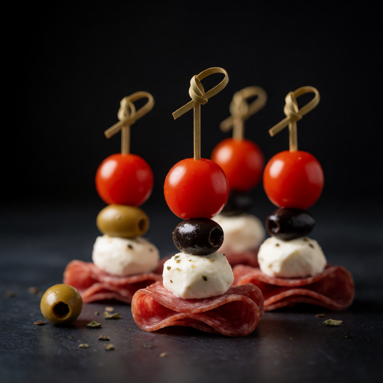

All the flavors of an antipasto plate, threaded onto skewers for easy eating.
At a Glance
Prep
10m
Cook
0m
Serves
1
Difficulty
Easy
Ingredients
- small skewers 4-5
- tortellini, cooked handful
- salami slices handful
- marinated mozzarella balls handful
- olives handful
- artichoke hearts handful
- cherry tomatoes handful
Method
-
Thread
Thread the ingredients onto the skewers in any order you like. Arrange on a plate and drizzle with a little of the marinade from the mozzarella.
Slop Notes
These are perfect for eating while standing in the kitchen.